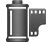

主頁
LumiXposure (beta)

LumiXposure (beta)
Version 1.1b1 · iOS 5–6 · Tweaks
說明
iOS 5-6 內建相機底片模擬插件，目前只在 iPhone 4, 4s, 5，iOS 5.1.1, 6.1.3 上做過測試，請謹慎使用。
Film simulation plugin for the built-in Camera app on iOS 5-6. Currently tested only on iPhone 4, 4s, 5, iOS 5.1.1, 6.1.3. Please use with caution.
限制
只支援 iPhone / iPod touch，iPad 不能安裝；只支援 iOS 5-6，其他版本不能安裝。
iPhone / iPod touch only - iPad is not supported. iOS 5-6 only - other versions cannot install.
版本紀錄
1.1b1：新增設定頁面，用戶可以自行選擇底片濃度、顆粒設定，A5以上設備改為採用CoreImage渲染以提升出圖速度。
1.0.55b1：初始發佈版本。